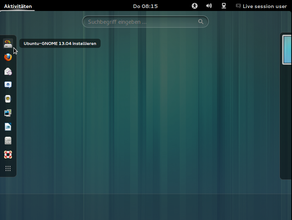

Ubuntu-GNOME Installation
Dieser Artikel wurde für die folgenden Ubuntu-Versionen getestet:
Ubuntu 14.04 Trusty Tahr
Hinweis:
Mit Erscheinen von Ubuntu 12.10 sind keine Installations-Abbilder mehr verfügbar, die auf herkömmliche CD-Medien (700 MiB) passen. Des Weiteren stehen auch keine Alternate-CDs mehr zur Verfügung. Desktop-Installationsabbilder umfassen nunmehr um die 800-1200 MiB und müssen auf Grund der Größe des Abbildes mit DVD- oder geeigneten USB-Speichermedien kombiniert werden, um davon installieren zu können.
Dieser Artikel beschreibt die Installation ab Ubuntu GNOME 13.04 mit Hilfe der Desktop-DVD. Diese Medien sind so ausgelegt, dass ein System relativ einfach, bequem und recht schnell installiert werden kann.
Vorbereitungen¶
Wenn sich auf dem Computer schon ein Betriebssystem wie beispielsweise Windows, Mac OS, ein anderes Linux-System oder wichtige Daten befinden, empfiehlt es sich dringend, eine Sicherung der wichtigsten Daten zu erstellen. Wie bei jeder tiefgreifenden Veränderung am Betriebssystem könnte auch beim Parallelinstallieren eines weiteren Betriebssystems ein Datenverlust die Folge sein. Um dem vorzubeugen, ist eine Sicherung der Daten der einfachste, beste und vor allem sicherste Weg.
Experten-Info:
Dieser Artikel beschreibt die Arbeitsschritte einer Installation im BIOS-Modus. Man sollte sich vorab darüber informieren, ob der Rechner mit einem EFI Bootmanagement versehen ist und wie die Festplatte(n) formatiert wurden! Weitere Informationen stehen unter EFI Grundlagen zur Verfügung!
Voraussetzungen¶
Diese Installationsvariante benötigt einen Computer mit mindestens 1.5 GiB RAM Arbeitsspeicher. Ubuntu GNOME funktioniert sowohl mit 2D- als auch mit 3D-fähigen Grafikkarten. Die Standard-Oberfläche GNOME Shell ist zwar per Voreinstellung auf 3D eingestellt, schaltet aber bei nicht 3D-fähiger Hardware in den 2D-Modus (Fallback-Modus) um. Empfohlen werden 2 GiB RAM, damit das System flüssig und stabil verwendet werden kann. Nach der Installation belegt das System mit Aktualisierungen auf der Festplatte ca. 7 GiB. Hinweise zur Festplatteneinteilung finden sich im Artikel Partitionierung.
Herunterladen¶
Als erstes sollte das passende Installations-Medium (ISO-Abbild) heruntergeladen werden. Auf der Download-Seite im hiesigen Wiki finden sich die entsprechenden Links dafür. Das heruntergeladene Installationsabbild ist anschließend mit einem geeigneten Programm (siehe auch ISO Abbild Brennen und UNetbootin) auf das entsprechende Medium zu bringen.
Installation¶
Start des Desktop-Mediums¶
Beim Start des Computers muss das Ubuntu-GNOME-Medium in das dafür vorgesehene optische Laufwerk eingelegt bzw. das vorbereitete USB-Speichermedium an einen passenden Port eingesteckt werden.
Hinweis:
Wenn der Computer trotz eingelegter DVD oder angestecktem USB-Installationsmedium wie gewohnt startet, ist dieser nicht für den Start von DVD/USB-Speicher eingerichtet. Entsprechende Änderungen (Boot-Reihenfolge) werden im BIOS des Computers vorgenommen. Die genaue Vorgehensweise dafür ist der beiliegende Anleitung, dieses Dokument 
 oder das Bios-Kompendium zu entnehmen. Je nach Hersteller, Geräte und Modell, ist auch schon eine Auswahl des zu startenden Laufwerks/Ports voreingestellt. Beim BIOS-Start wird diese dann angezeigt, wie Beispielsweise:
F8 ,
F10 oder
F12 , was wiederum eine direkte Auswahl des Laufwerks/Ports erlaubt von dem gestartet werden soll.
oder das Bios-Kompendium zu entnehmen. Je nach Hersteller, Geräte und Modell, ist auch schon eine Auswahl des zu startenden Laufwerks/Ports voreingestellt. Beim BIOS-Start wird diese dann angezeigt, wie Beispielsweise:
F8 ,
F10 oder
F12 , was wiederum eine direkte Auswahl des Laufwerks/Ports erlaubt von dem gestartet werden soll.
Hinweis:
Wer beim Arbeiten mit der CD den Screenreader einsetzen möchte, kann an dieser Stelle strg+s drücken. Bei angeschlossener Braillezeile, welche über eine USB-Schnittstelle angesteuert wird, wird diese hiernach eingebunden.
Nachdem vom Installationsmedium gebootet wird, erscheint kurz ein Splash-Screen. Das Sprachauswahl-Menü folgt diesem mit der Möglichkeit, die gewünschte Sprache durch die Pfeiltaste ↑ ↓ auszuwählen sowie mit ⏎ die erwünschte Sprache zu bestätigen. === Wird keine Sprachauswahl getroffen, setzt die Installationsroutine nach 30 Sekunden mit dem Splash-Screen und Englisch als Systemsprache fort. Anschließend erscheint das folgende Auswahlmenü (siehe Tabelle für Beschreibung der Funktionen)
| Sprachauswahl |
| Auswahlmenü: Direkt-Install |
| Auswahlmenü: Live-Betrieb |
Des Weiteren sind die Direktwahl-Tasten F1 bis F6 mit verschiedenen Möglichkeiten der Information, Konfiguration, sowie Auswahl verschiedener anderer Menüs für erweiterte Anpassungen unterlegt.
| Startoptionen | |
| Möglichkeit | Erklärung |
| "Ubuntu GNOME ohne Installation ausprobieren" | Startet Ubuntu-GNOME im Live-Modus, am System wird nichts verändert, aus dem Live-System kann das Installationsprogramm gestartet werden. |
| "Ubuntu GNOME installieren" | Startet das Installationsprogramm direkt. |
| "CD/DVD auf Fehler überprüfen" | Überprüft, ob die CD funktionsfähig ist oder ob während des Herunterladens oder während des Brennvorganges Fehler auftraten, die das Medium unbrauchbar machen. |
| "Arbeitsspeicher testen" | Startet memtest, um den Arbeitsspeicher nach Fehlern zu durchsuchen. |
| "Von der ersten Festplatte starten" | Beendet das Ubuntu GNOME Auswahlmenü und startet (falls vorhanden) das Betriebssystem auf der Festplatte. |
Hinweis:
Nachdem die Vorauswahl getroffen wurde, fährt die Installationsroutine fort und zeigt dem Anwender einen Splash-Screen, welcher sich mit Esc ausblenden lässt und den Textbasierten Ablauf zeigt. Diese Funktion kann sehr hilfreich sein, wenn bei der Installation Probleme auftreten, deren Ursache damit leichter zu finden sind.
| Splash-Screen |
| Text-Ausgabe |
|  |
| Live-Betrieb: Start Installation |
Ob direkt Installation oder aus dem Live-Betrieb heraus gestartet, unterscheidet sich die Installationsroutine im Ablauf nicht. Die auszuführenden Schritte sind identisch. Ist "Ubuntu GNOME Installieren" gewählt, startet die Installationsroutine sofort.
Sprachauswahl, Vorbereitung Installation¶
Nachdem "Ubuntu GNOME installieren" ausgewählt wurde, folgt die Sprachauswahl:
| Sprachauswahl |
| Installationsvorbereitung |
An dieser Stelle erscheint ein Hinweis, welche Bedingungen (grüne Haken) zur Installation erfüllt sein müssen. Zumindest bei Notebooks ist eine Stromversorgung über das Netzteil und eine Internetverbindung (leider) zwingend erforderlich! Falls der WLAN-Adapter nicht automatisch erkannt wird, sollte ein Netzwerkkabel benutzt werden.
Es wird mindestens 7 GiB freier Festplattenplatz benötigt, damit später noch Platz für weitere Software bleibt oder beim Upgrade auf neuere Ubuntu GNOME Versionen keine Platzprobleme entstehen.
Weiterhin lässt sich auswählen, ob direkt mit der Installationsroutine aktualisierte Pakete und Sprachpakete heruntergeladen werden sollen – eine funktionierende Internetanbindung ist Voraussetzung dafür. Außerdem können weitere Codecs geeignet zur Wiedergabe von Audio- und Video-Medien direkt installiert werden. Aktuelle Pakete, Codecs sowie jede weitere Software lässt sich natürlich auch jederzeit nachträglich über die Paketverwaltung installieren.
Experten-Info:
Sollte wirklich keine Möglichkeit vorhanden sein, eine Internetverbindung zu nutzen, lässt sich im BIOS des Rechners die Netzwerkkarte/n vorübergehend deaktivieren (alternativ Karte ausbauen). Dann ist aber die Installation von Sprachpaketen nicht möglich und das Resultat ein englischsprachiges Ubuntu GNOME.
Ist eine Grafikkarte mit Nvidias Optimus-Technologie verbaut, empfiehlt es sich den Haken bei "Software von Drittanbietern installieren" nicht zu setzen, weil es sonst zu Problemen mit der Grafikkarte kommen könnte. Nachträglich lässt sich der Treiber Bumblebee installieren, um die Grafikkarte zu verwenden.
Festplatte, Partitionen/Partitionierung¶
Im nächsten Schritt wird festgelegt, wo der Bootmanager GRUB 2 (der den Startvorgang von Ubuntu GNOME initiiert) installiert werden soll. Je nachdem, ob eine unbenutzte (neue) oder eine bereits teilweise belegt Festplatte das Ziel der Installation ist, sieht das erscheinende Fenster etwas anders aus.
Bei einer neuen Festplatte erscheint folgendes Fenster:
| Partitionieren |
Soll auf dem Rechner nur Ubuntu GNOME und kein andere Betriebssystem verwendet werden, kann der ersten Punkt "Festplatte löschen und Ubuntu installieren" gewählt werden. Ubuntu GNOME nutzt dann die gesamte Festplatte und kopiert den Bootmanager in den Master Boot Record (MBR) der ersten Festplatte.
Achtung!
Der Ubuntu-GNOME-Installer erkennt auf einem (U)EFI-Board (Unified Extensible Firmware Interface) keine weiteren EFI-Installationen. Dieser Umstand ist unbedingt vor der Installation abzuklären - siehe auch EFI Installieren!
Alle auf der Festplatte vorhandenen Daten werden bei dieser Auswahl unwiderruflich gelöscht!
Soll nicht nur Ubuntu GNOME auf dem Rechner installiert werden, bzw. ist eine spezielle Aufteilung oder ein anderes Dateisystem als das standardmäßig genutzte ext4 angestrebt, muss der Punkt "Etwas anderes" ausgewählt werden. Ebenso, falls der Bootloader nicht in den MBR der ersten Festplatte installiert werden soll.
Ist bereits die unmittelbar vorhergehende Ubuntu-GNOME(-Remix) Version installiert, bietet das Installationsprogramm eine Aktualisierung ("Upgrade") an. Alternativ können aber auch beide Versionen parallel installiert werden. Die Möglichkeiten dazu sind bereits beschrieben.
Für die Partitionierung wird GParted verwendet.
| Installationsort: Festplatte(n) |
| Partitionierung: Hinweis |
| Partitionen: Zuweisen |
| Partitionen: Anlegen |
Wurde der Punkt "Neue Partitionstabelle" ausgewählt, findet folgend sogleich die manuelle Partitionierung statt. Durch einen Klick auf "Hinzufügen" lassen sich neue Partitionen anlegen. Es erscheint ein Hinweis, anschließend kann der Platz durch "Partitionen Anlegen" manuell zugeteilt werden.
Allgemeine Hinweise finden sich im Wiki-Artikel Partitionierung. Die Partitionierung beginnt am besten, indem bei neuen oder unbenutzten Festplatten auf "Neue Partitionstabelle" geklickt bzw. bei bereits in Benutzung befindlichen Festplatten eine Partition zur Verkleinerung ausgewählt (siehe unten) bzw. ein freier Bereich auf der Festplatte gewählt und auf "Ändern" geklickt wird.
| Format-Wahl |
| Einhängepunkte |
Einstellbar ist der Partitions-Typ, die Größe, die Position, mit welchem Dateisystem die Partition formatiert werden soll, sowie der Einhängepunkt für Partitionen. Ein Klick auf "OK" übergibt die getätigten Einstellungen an das Installationsprogramm ("installer"). Dieser Schritt kann dann so oft wiederholt werden bis die Partitionen wie gewünscht bestehen.
Hinweis:
Für die Partition auf die Ubuntu GNOME installiert werden soll, muss als Einbindungspunkt / (bedeutet "Root") ausgewählt werden, sonst gibt der Installationsmanager eine Fehlermeldung aus, dass keine Root-Partition festgelegt wurde. Dazu wird als erstes auf die Partition geklickt, auf die installiert werden soll, um anschließend mit "Ändern" und der Wahl des "Einbindungspunkt" / fortzufahren.
Wird ein Linux-System (Ubuntu GNOME) zum ersten Mal auf einem Computer installiert, muss zumindest eine Installationspartition (/) und eine Swap-Partition angelegt werden. Allgemeine Hinweise und Informationen finden sich im bereits weiter oben erwähnten Artikel Partitionierung.
Ist der Parallelbetrieb zu einem bestehendem System inklusive einer manuellen Partitionierung das Ziel, muss zuerst eine vorhandene Partition ausgewählt und anschließend auf "Ändern" geklickt werden. Nun kann die Größe der Partition geändert und anschließend mit "OK" bestätigt werden. Der so gewonnene Platz kann für neue Partitionen genutzt werden, wie bereits oben beschrieben.
Bootloader¶
Achtung!
Wer sich nicht sicher im Vorgehen ist, sollte die Voreinstellung für den Bootloader beibehalten! Bei der Installation werden vorhanden Installationen in der Regel zuverlässig erkannt – inklusive Windows-Installationen. Für diese werden dann automatisch die passenden Starteinträge vom Bootloader angelegt, so dass die vorhandenen Betriebssysteme nach der Installation von Ubuntu GNOME weiterhin problemlos gebootet werden können.
Es kann im Auswahlmenü "Bootloader" im unteren Teil des Fensters ausgewählt werden, wo der Bootloader GRUB 2 platziert werden soll. Voreingestellt ist immer der MBR der ersten Festplatte. Mögliche weitere Ziele sind aber auch jeder andere MBR von weiteren Festplatten bzw. an der Anfang einer vorhandenen Partition (PBR).
| Bootloader-Konfiguration |
Ist alle Vorarbeit beendet, die Bedingungen zur Installation geschaffen, genügt ein Klick auf "Jetzt installieren"!
Achtung!
Im Gegensatz zu früheren Ubuntu-Versionen beginnt das Installationsprogramm bereits in diesem Moment, die Partitionen anzulegen und Daten zu kopieren, obwohl noch weitere Installationsdialoge folgen, d.h. mit dem Klick auf "Jetzt installieren" werden Daten auf die Festplatte geschrieben und – je nach Art der Installation bzw. Art der Partitionierung – vorhandene Daten überschrieben!
Zeitzone, Tastaturlayout¶
Mit der Sprachwahl ist bereits die entsprechende Zeitzone voreingestellt. Sollte dem nicht so sein, lässt sich die Stadt auswählen die sich in der eigenen Zeitzone befindet. Die Voreinstellung "Berlin" ist für Deutschland korrekt.
| Zeitzonen |
| Tastaturlayout |
Auch die Voreinstellung für die Tastatur bzw. das Tastaturlayout muss nur verändert werden, wenn ein fremdsprachiges oder beispielsweise ein DVORAK-Layout Verwendung findet. Eine Erkennung des Layouts, durch Eintippen im Dialog vorgegebener Buchstaben- und Zahlenkombination, hilft bei der Konfiguration.
Die richtige Tastatur-Einstellung für deutsche Tastaturen (egal ob normale Tastatur oder Laptop) ist in der Regel "Deutschland - Akzenttasten deaktivieren" bzw. "Germany - Eliminate dead keys".
Benutzerdaten eingeben¶
| Wer sind Sie? |
| Die Eingaben waren erfolgreich |
Der Installationsroutine folgend, müssen jetzt noch einige Daten zum Hauptbenutzer des Computers eingegeben werden. Dieser Nutzer kann nach Eingabe seines Passwortes wichtige Systemeinstellungen verändern. Ein solches Passwort sollte sehr sorgfältig gewählt werden. Alle Wörter die auch in einem Wörterbuch auftauchen, könnten leicht erraten werden und sind deshalb nicht geeignet für ein sicheres Passwort. Sehr gut hingegen sind willkürlich gewählte Folgen von Zahlen, Groß- und Kleinbuchstaben, die allerdings schwer zu merken sein können. Siehe dazu auch das Sicherheits 1x1. Der Benutzername für die "Anmeldung am System" darf nur Zahlen und Kleinbuchstaben, jedoch keine Umlaute enthalten.
Außerdem kann an dieser Stelle auch ausgewählt werden, ob das Homeverzeichnis während der Installation verschlüsselt werden soll. Hinweise zur Nutzung finden sich im Wiki.
Installationsverlauf¶
Während die Installation von statten geht, wird mit einer Slideshow die Wartezeit überbrückt. Gezeigt werden typische Anwendungen der jeweils gewählten Ubuntu-Version, in diesem Beispiel Ubuntu GNOME 13.04 und den darin befindlichen Anwendungen.
| Install-Ablauf |
| Slideshow |
| Slideshow |
Neustart¶
Ist die Installation erfolgreich abgeschlossen, muss der Computer einmal neu gestartet werden.
Nach der Installation¶
Nach erfolgreicher Installation ist Ubuntu GNOME bereits vielseitig einsetzbar, aber dennoch aus verschiedensten Gründen sollte noch eine Feinjustierung folgen. Wie ein Anwender am besten dabei vorgeht, wird in den ersten Schritten ausführlich erklärt.

 Übersichtsartikel
Übersichtsartikel- Erstellt mit Inyoka
-
 2004 – 2017 ubuntuusers.de • Einige Rechte vorbehalten
2004 – 2017 ubuntuusers.de • Einige Rechte vorbehalten
Lizenz • Kontakt • Datenschutz • Impressum • Serverstatus -
Serverhousing gespendet von